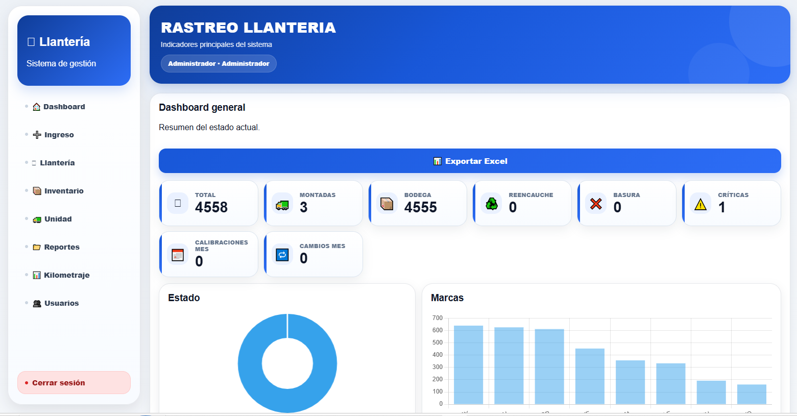
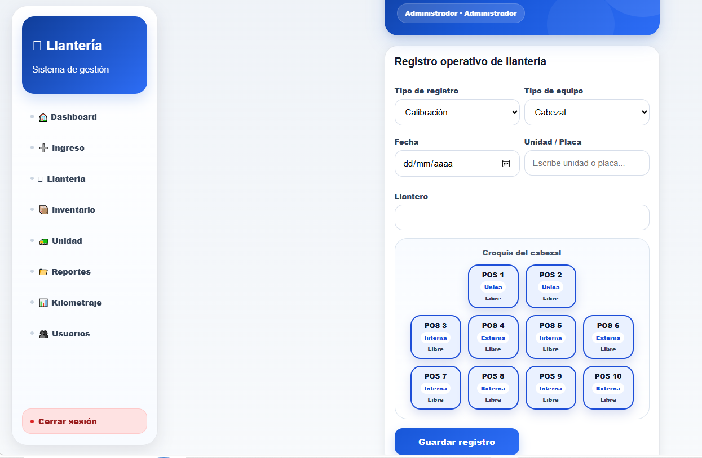
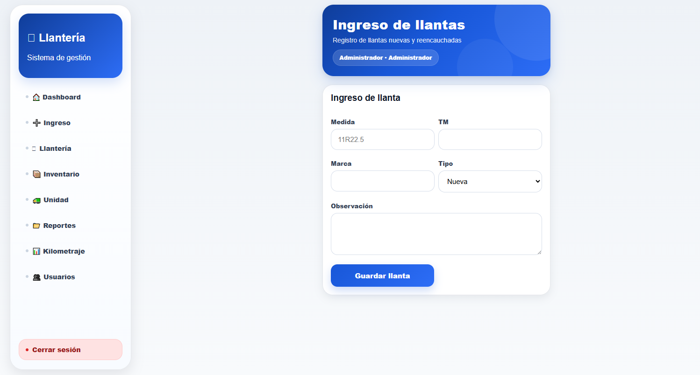
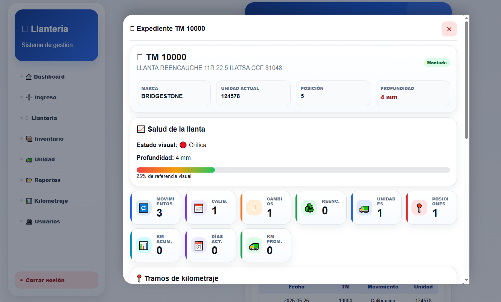
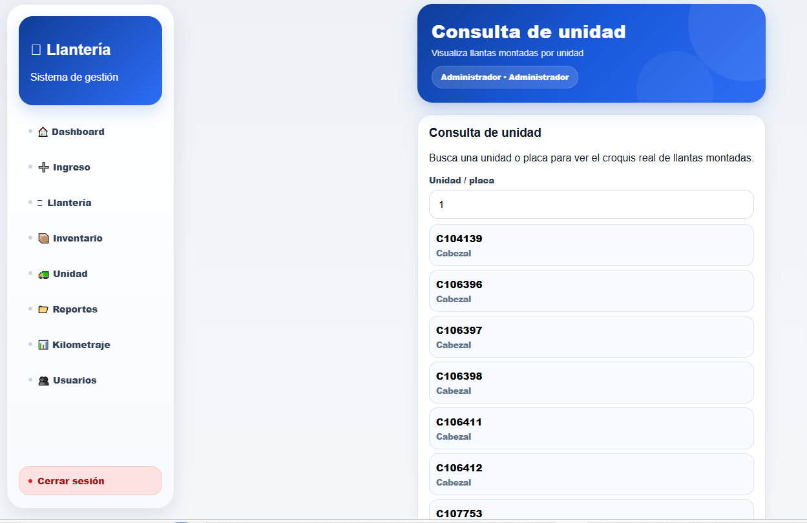
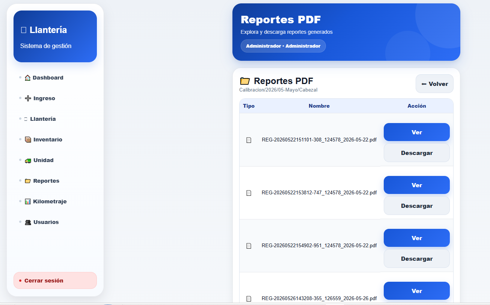
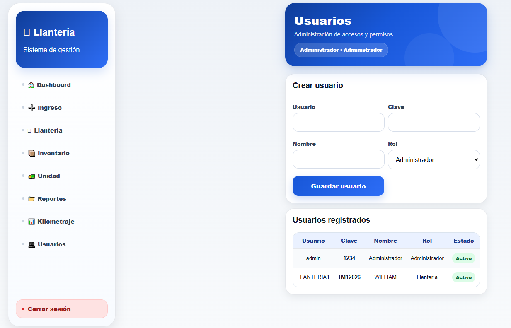

🚛 Sistema de Control de Llantas
Sistema web para registrar calibraciones, cambios de llantas, inventario e historial operativo.
- Registro de calibraciones
- Control de inventario
- Reportes automáticos
Estudiante de Ingeniería en Sistemas
Apasionado por el desarrollo de software, automatización de procesos y creación de soluciones tecnológicas aplicadas a problemas reales.
Soy estudiante de Ingeniería en Sistemas de la Universidad de El Salvador. Tengo experiencia en supervisión operativa, gestión HSSE, automatización de procesos, bases de datos y desarrollo de sistemas.
Sistema web para registrar calibraciones, cambios de llantas, inventario e historial operativo.
Plataforma para gestionar checklists, hallazgos y reportes operativos.
Asistente de estudio basado en Python para apoyo académico y automatización.

Sistema desarrollado para Transportes Martínez S.A. de C.V. enfocado en el control operativo de llantas de cabezales y cisternas.
Asistente en Supervisión de Plantel y HSSE
Marzo 2025 - Actualidad
Pasante Administrativo / Operativo
Diciembre 2023 - Marzo 2025
Microsoft Office Specialist
Information Technology Specialist
Certificación de Inglés
Certificación de Inglés
📧 c.ernesto.ghdez@gmail.com
📍 Lourdes Colón, La Libertad, El Salvador
🐙 GitHub: carlitos-cute-10





